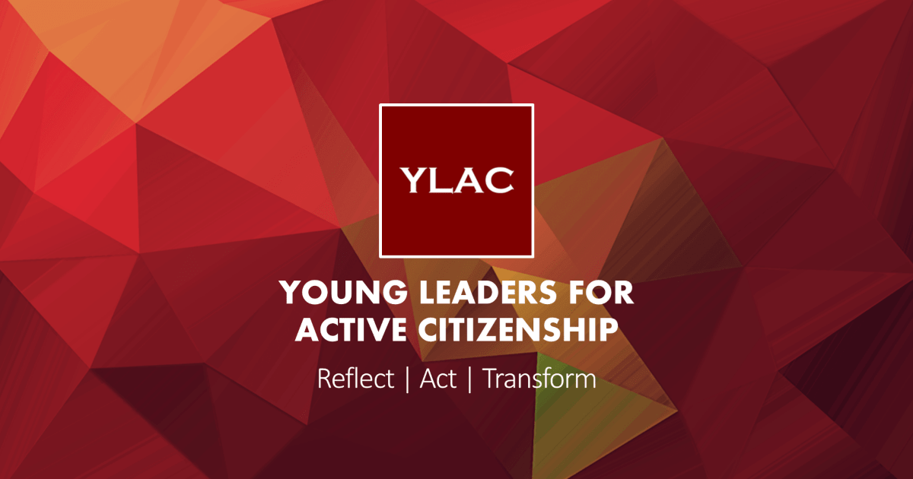
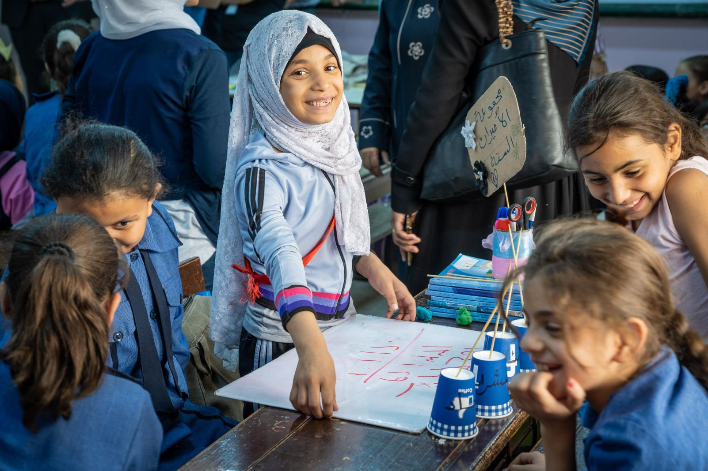

I am from Mumbai, India,
currently studying at the Hague
University of Applied Sciences, majoring
in UX design.
My strong sense of empathy along with the
tools used for design drives me as a UX designer.
I am passionate about using technology for
good.I like to volunteer at Non-Profit
Organisations and also expressing myself
through singing and dancing.
currently studying at the Hague
University of Applied Sciences, majoring
in UX design.
My strong sense of empathy along with the
tools used for design drives me as a UX designer.
I am passionate about using technology for
good.I like to volunteer at Non-Profit
Organisations and also expressing myself
through singing and dancing.


Awareness and Fundraising

Research project on Dalit community

Team Manager for Udayan

Content Creator for Social Media Advocacy

Helping Autistic children
| I volunteered with UNICEF Netherlands for its Jordan project which is running currently.Through this project UNICEF is providing access to education to migrant children in Jordan.We as volunteers, our task was to make poeple aware of this project and raise funds. |  |


2019
User Experience
Bachelor of Science
2017-2019
High School

Let's get in touch :)